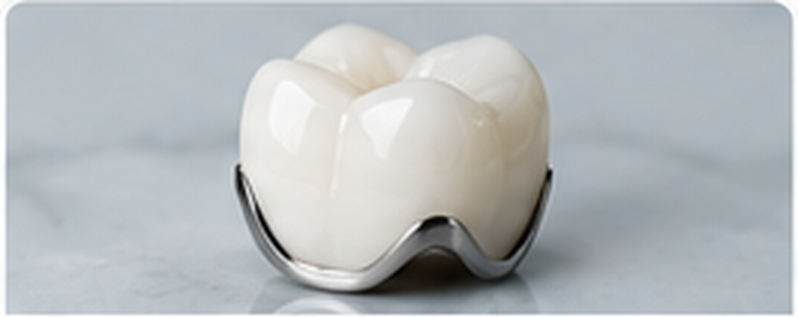
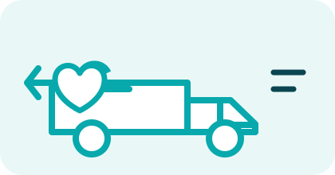

Zirconia Crowns
Aesthetic, strong and biocompatible zirconia restorations coordinated through selected laboratory partners. Learn more ->
Dental laboratory support for clinics that want clear communication and dependable delivery.
Aesthetic, strong and biocompatible zirconia restorations coordinated through selected laboratory partners. Learn more ->

A proven restoration option where cost, strength and established clinical workflow matter.
Practical metal restoration coordination for cases where durability and economics are priorities.

Single and multiple-unit cases coordinated with attention to prescription, contacts, occlusion and delivery.

Support for scan-based submissions, file transfer, case communication and laboratory coordination.

Clinic pickup and delivery coordination designed to reduce the time your team spends chasing cases.